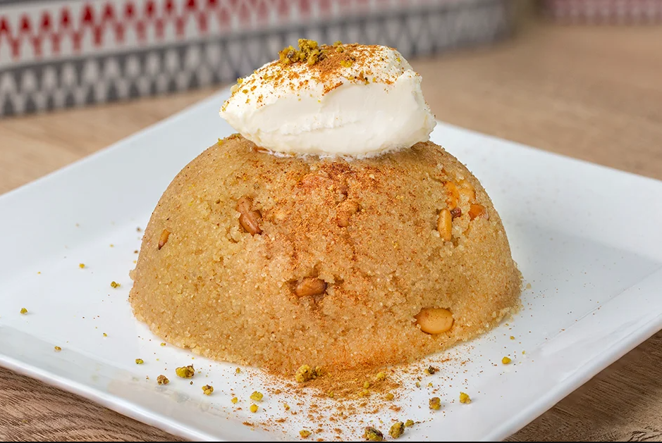

İrmik Helvası Tarifi
Bu tam kıvamında ve denenmiş irmik helvası tarifinin yapılışını hemen aşağıda bulabilirsiniz. Afiyetler olsun.

İrmik Helvası Tarifi İçin Malzemeler
Helva İçin
- 3 yemek kaşığı tereyağı
- 1,5 su bardağı süt
- 1,5 su bardağı irmik
- 1/2 su bardağı çam fıstığı
- 1,5 su bardağı su
- 1,5 su bardağı toz şeker
Servisi İçin
- 2 tatlı kaşığı tarçın
- Dondurma
Afiyet Olsun
yemek.com'dan alınmıştır